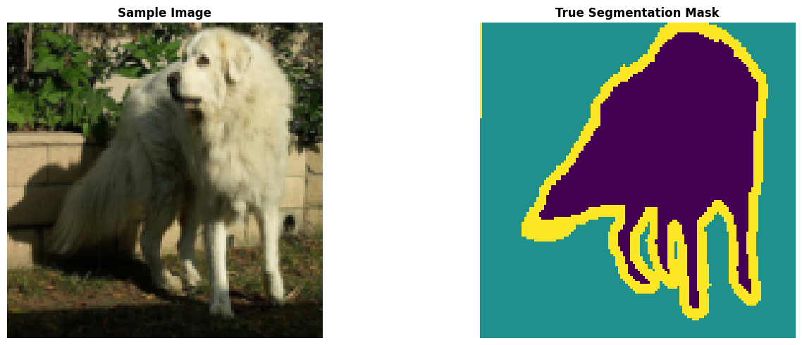
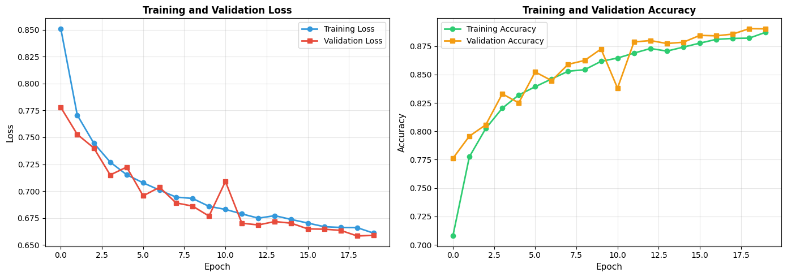
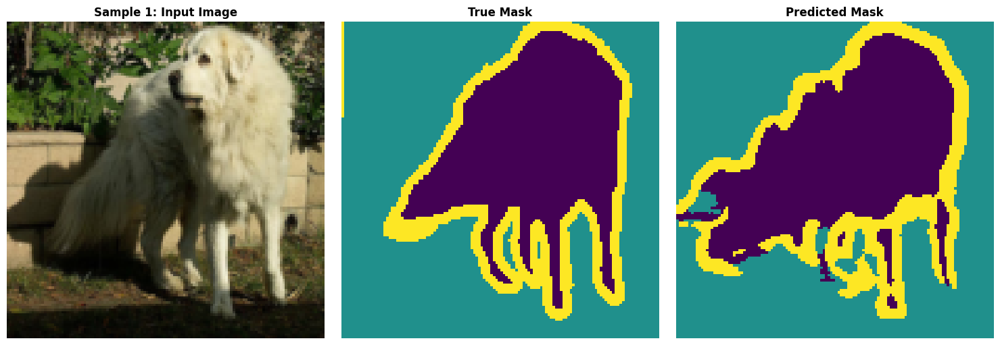
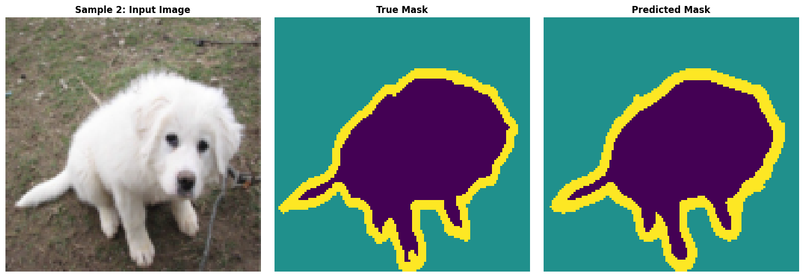
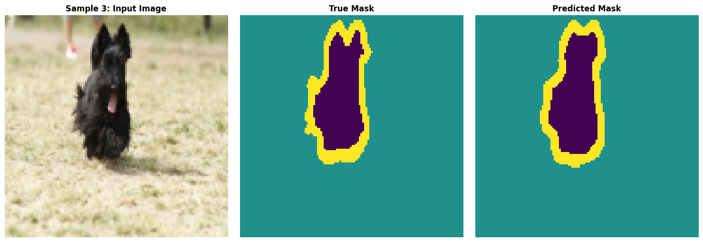
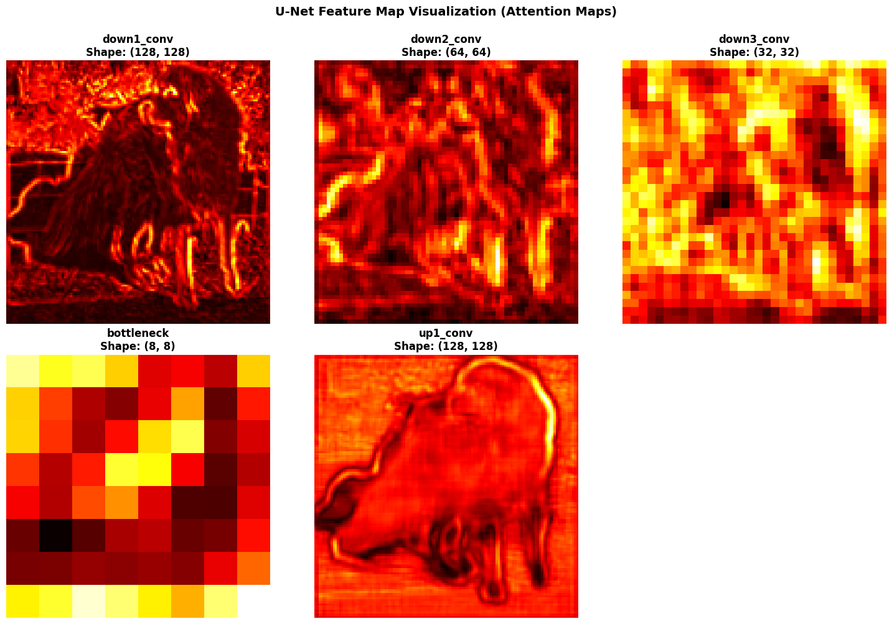

Aim: Implement a deep neural network (Ex: UNet / SegNet) for Image Segmentation task.
Pratham Goyal A2345924079 4CSE-2eve
This notebook demonstrates semantic segmentation using a U-Net architecture on the Oxford-IIIT Pet Dataset. U-Net is a convolutional neural network designed for image segmentation tasks with high precision.
Load required packages for segmentation, computer vision, and visualization.
# pip install # ============================================================================
# IMPORTS - Core Libraries
# ============================================================================
import torch
import torch.nn as nn
import torch.optim as optim
from torch.utils.data import DataLoader, Dataset
import torchvision
import torchvision.transforms as transforms
from torchsummary import summary
import matplotlib.pyplot as plt
import numpy as np
import os
import warnings
from PIL import Image
from torchvision.datasets.utils import download_and_extract_archive
warnings.filterwarnings('ignore')
# Device configuration
DEVICE = torch.device('cuda' if torch.cuda.is_available() else 'cpu')
print(f"Using device: {DEVICE}")
# Set random seeds
torch.manual_seed(42)
np.random.seed(42)
if torch.cuda.is_available():
torch.cuda.manual_seed(42)Using device: cuda
# ============================================================================
# LOAD DATASET - OXFORD-IIIT PET DATASET
# ============================================================================
print("Loading Oxford-IIIT Pet dataset...")
# Download URLs
DATASET_URL = "https://www.robots.ox.ac.uk/~vgg/data/pets/data/"
IMAGE_URL = DATASET_URL + "images.tar.gz"
MASK_URL = DATASET_URL + "annotations.tar.gz"
# Create data directory
DATA_DIR = "./pet_dataset"
os.makedirs(DATA_DIR, exist_ok=True)
# Download and extract dataset
print("Downloading dataset (this may take a few minutes)...")
try:
download_and_extract_archive(IMAGE_URL, DATA_DIR, remove_finished=True)
download_and_extract_archive(MASK_URL, DATA_DIR, remove_finished=True)
print("Dataset downloaded successfully!")
except Exception as e:
print(f"Download complete or already exists: {e}")
# Dataset paths
IMAGE_DIR = os.path.join(DATA_DIR, "images")
MASK_DIR = os.path.join(DATA_DIR, "annotations", "trimaps")
# Count samples
image_files = [f for f in os.listdir(IMAGE_DIR) if f.endswith('.jpg')]
mask_files = [f for f in os.listdir(MASK_DIR) if f.endswith('.png')]
print(f"\nDataset information:")
print(f" Total images: {len(image_files)}")
print(f" Total masks: {len(mask_files)}")
print(f" Image directory: {IMAGE_DIR}")
print(f" Mask directory: {MASK_DIR}")Loading Oxford-IIIT Pet dataset...
Downloading dataset (this may take a few minutes)...
100%|██████████| 792M/792M [00:23<00:00, 33.9MB/s]
100%|██████████| 19.2M/19.2M [00:01<00:00, 16.0MB/s]
Dataset downloaded successfully!
Dataset information:
Total images: 7390
Total masks: 14780
Image directory: ./pet_dataset/images
Mask directory: ./pet_dataset/annotations/trimaps
# ============================================================================
# PYTORCH DATASET CLASS
# ============================================================================
class OxfordPetDataset(Dataset):
"""
PyTorch Dataset for Oxford-IIIT Pet Dataset
Returns images and their corresponding segmentation masks
"""
def __init__(self, image_dir, mask_dir, transform=None, target_size=128):
self.image_dir = image_dir
self.mask_dir = mask_dir
self.transform = transform
self.target_size = target_size
# Get list of image files
self.image_files = sorted([f for f in os.listdir(image_dir) if f.endswith('.jpg')])
# Filter to only include images that have corresponding masks
self.valid_files = []
for img_file in self.image_files:
mask_file = img_file.replace('.jpg', '.png')
mask_path = os.path.join(mask_dir, mask_file)
if os.path.exists(mask_path):
self.valid_files.append(img_file)
print(f"Loaded {len(self.valid_files)} valid image-mask pairs")
def __len__(self):
return len(self.valid_files)
def __getitem__(self, idx):
# Load image
img_name = self.valid_files[idx]
img_path = os.path.join(self.image_dir, img_name)
image = Image.open(img_path).convert('RGB')
# Load mask
mask_name = img_name.replace('.jpg', '.png')
mask_path = os.path.join(self.mask_dir, mask_name)
mask = Image.open(mask_path)
# Resize
image = image.resize((self.target_size, self.target_size), Image.BILINEAR)
mask = mask.resize((self.target_size, self.target_size), Image.NEAREST)
# Convert to tensors
image = transforms.ToTensor()(image)
mask = torch.from_numpy(np.array(mask, dtype=np.int64)) - 1 # Convert 1,2,3 to 0,1,2
# Apply transforms if any
if self.transform:
image = self.transform(image)
return image, mask
class AugmentedDataset(Dataset):
"""Dataset wrapper with augmentation"""
def __init__(self, base_dataset, augment=True):
self.base_dataset = base_dataset
self.augment = augment
def __len__(self):
return len(self.base_dataset)
def __getitem__(self, idx):
image, mask = self.base_dataset[idx]
if self.augment and torch.rand(1) > 0.5:
# Random horizontal flip
image = torch.flip(image, dims=[2])
mask = torch.flip(mask, dims=[1])
return image, mask
print("Dataset classes defined successfully!")Dataset classes defined successfully!
# ============================================================================
# PREPARE TRAINING AND TEST DATASETS
# ============================================================================
print("Preparing datasets...")
TARGET_SIZE = 128
BATCH_SIZE = 64
# Create base dataset
full_dataset = OxfordPetDataset(IMAGE_DIR, MASK_DIR, target_size=TARGET_SIZE)
# Split into train/val/test
total_samples = len(full_dataset)
train_size = int(0.7 * total_samples)
val_size = int(0.15 * total_samples)
test_size = total_samples - train_size - val_size
train_dataset, val_dataset, test_dataset = torch.utils.data.random_split(
full_dataset, [train_size, val_size, test_size],
generator=torch.Generator().manual_seed(42)
)
# Wrap training dataset with augmentation
train_dataset_aug = AugmentedDataset(train_dataset, augment=True)
val_dataset_aug = AugmentedDataset(val_dataset, augment=False)
test_dataset_aug = AugmentedDataset(test_dataset, augment=False)
# Create data loaders
train_loader = DataLoader(train_dataset_aug, batch_size=BATCH_SIZE, shuffle=True, num_workers=2)
val_loader = DataLoader(val_dataset_aug, batch_size=BATCH_SIZE, shuffle=False, num_workers=2)
test_loader = DataLoader(test_dataset_aug, batch_size=BATCH_SIZE, shuffle=False, num_workers=2)
print(f"\nDataset configuration:")
print(f" Batch size: {BATCH_SIZE}")
print(f" Target image size: {TARGET_SIZE}x{TARGET_SIZE}")
print(f" Training samples: {len(train_dataset)}")
print(f" Validation samples: {len(val_dataset)}")
print(f" Test samples: {len(test_dataset)}")Preparing datasets...
Loaded 7390 valid image-mask pairs
Dataset configuration:
Batch size: 64
Target image size: 128x128
Training samples: 5173
Validation samples: 1108
Test samples: 1109
# ============================================================================
# DATA VISUALIZATION
# ============================================================================
def display_segmentation_sample(display_list, titles=None):
"""
Display image, mask, and prediction side by side
Args:
display_list: List of tensors to display
titles: List of titles for each image
"""
if titles is None:
titles = ["Input Image", "True Mask", "Predicted Mask"]
plt.figure(figsize=(15, 5))
for i, (img, title) in enumerate(zip(display_list, titles)):
plt.subplot(1, len(display_list), i + 1)
plt.title(title, fontsize=12, fontweight='bold')
# Convert to numpy and display
if isinstance(img, torch.Tensor):
img_np = img.cpu().numpy()
else:
img_np = img
# Handle different image shapes
if len(img_np.shape) == 3 and img_np.shape[0] == 3:
# RGB image (C, H, W) -> (H, W, C)
img_np = np.transpose(img_np, (1, 2, 0))
plt.imshow(img_np)
else:
# Grayscale or mask
plt.imshow(img_np, cmap='viridis')
plt.axis('off')
plt.tight_layout()
plt.show()
# Get a sample batch
sample_batch = next(iter(test_loader))
sample_image, sample_mask = sample_batch[0][0], sample_batch[1][0]
print("Sample Image Shape:", sample_image.shape)
print("Sample Mask Shape:", sample_mask.shape)
print("Unique classes in mask:", torch.unique(sample_mask))
# Display sample
display_segmentation_sample([sample_image, sample_mask],
["Sample Image", "True Segmentation Mask"])Sample Image Shape: torch.Size([3, 128, 128])
Sample Mask Shape: torch.Size([128, 128])
Unique classes in mask: tensor([0, 1, 2])

# ============================================================================
# U-NET ARCHITECTURE COMPONENTS
# ============================================================================
class DoubleConvBlock(nn.Module):
"""
Double Convolution Block
Applies two consecutive Conv2D -> BatchNorm -> ReLU operations
This is a fundamental building block in U-Net
"""
def __init__(self, in_channels, out_channels):
super(DoubleConvBlock, self).__init__()
self.conv1 = nn.Conv2d(in_channels, out_channels, kernel_size=3,
padding=1, bias=False)
self.bn1 = nn.BatchNorm2d(out_channels)
self.relu1 = nn.ReLU(inplace=True)
self.conv2 = nn.Conv2d(out_channels, out_channels, kernel_size=3,
padding=1, bias=False)
self.bn2 = nn.BatchNorm2d(out_channels)
self.relu2 = nn.ReLU(inplace=True)
def forward(self, x):
"""Forward pass through double convolution block"""
x = self.conv1(x)
x = self.bn1(x)
x = self.relu1(x)
x = self.conv2(x)
x = self.bn2(x)
x = self.relu2(x)
return x
class DownsampleBlock(nn.Module):
"""
Downsampling Block (Encoder)
Applies:
1. Double convolution
2. Max pooling for spatial reduction
3. Dropout for regularization
Reduces spatial dimensions by half while capturing features
"""
def __init__(self, in_channels, out_channels):
super(DownsampleBlock, self).__init__()
self.conv = DoubleConvBlock(in_channels, out_channels)
self.pool = nn.MaxPool2d(kernel_size=2, stride=2)
self.dropout = nn.Dropout2d(0.3)
def forward(self, x):
"""
Forward pass
Returns:
conv_output: Features before pooling (for skip connection)
pool_output: Features after pooling (for next layer)
"""
conv_output = self.conv(x)
pool_output = self.pool(conv_output)
pool_output = self.dropout(pool_output)
return conv_output, pool_output
class UpsampleBlock(nn.Module):
"""
Upsampling Block (Decoder)
Applies:
1. Transposed convolution for spatial expansion
2. Concatenation with skip connection from encoder
3. Dropout for regularization
4. Double convolution
Restores spatial dimensions while refining predictions
"""
def __init__(self, in_channels, out_channels):
super(UpsampleBlock, self).__init__()
self.upconv = nn.ConvTranspose2d(in_channels, out_channels, kernel_size=2,
stride=2)
self.dropout = nn.Dropout2d(0.3)
# After concatenation, we have out_channels + out_channels = 2*out_channels
self.conv = DoubleConvBlock(2 * out_channels, out_channels)
def forward(self, x, skip_connection):
"""
Forward pass
Args:
x: Upsampled features from decoder
skip_connection: Features from corresponding encoder layer
Returns:
Refined features after upsampling and convolution
"""
x = self.upconv(x)
x = self.dropout(x)
# Concatenate with skip connection from encoder
x = torch.cat([x, skip_connection], dim=1)
# Apply double convolution
x = self.conv(x)
return x
print("U-Net architecture components defined successfully!")U-Net architecture components defined successfully!
# ============================================================================
# COMPLETE U-NET MODEL
# ============================================================================
class UNet(nn.Module):
"""
U-Net Architecture for Semantic Segmentation
Architecture:
- Encoder (Contracting Path): Downsamples image while learning features
- Bottleneck: Deepest layer with maximum receptive field
- Decoder (Expanding Path): Upsamples while refining predictions
- Skip Connections: Concatenate encoder features with decoder features
Benefits:
- Skip connections preserve fine-grained spatial information
- Encoder-decoder structure balances accuracy and computational efficiency
- Works well with limited training data
Input: (3, 128, 128) - 3-channel RGB image
Output: (3, 128, 128) - 3-channel segmentation mask (3 classes)
"""
def __init__(self, in_channels=3, num_classes=3):
super(UNet, self).__init__()
# ============ ENCODER (CONTRACTING PATH) ============
# Layer 1: 128x128 -> 128x128 (features: 64)
self.down1 = DownsampleBlock(in_channels, 64)
# Layer 2: 128x128 -> 64x64 (features: 128)
self.down2 = DownsampleBlock(64, 128)
# Layer 3: 64x64 -> 32x32 (features: 256)
self.down3 = DownsampleBlock(128, 256)
# Layer 4: 32x32 -> 16x16 (features: 512)
self.down4 = DownsampleBlock(256, 512)
# ============ BOTTLENECK ============
# Layer 5: 16x16 -> 16x16 (features: 1024)
self.bottleneck = DoubleConvBlock(512, 1024)
# ============ DECODER (EXPANDING PATH) ============
# Layer 6: 16x16 -> 32x32 (features: 512)
self.up4 = UpsampleBlock(1024, 512)
# Layer 7: 32x32 -> 64x64 (features: 256)
self.up3 = UpsampleBlock(512, 256)
# Layer 8: 64x64 -> 128x128 (features: 128)
self.up2 = UpsampleBlock(256, 128)
# Layer 9: 128x128 -> 128x128 (features: 64)
self.up1 = UpsampleBlock(128, 64)
# ============ OUTPUT LAYER ============
# Final convolution to produce segmentation map
self.final_conv = nn.Conv2d(64, num_classes, kernel_size=1)
# Softmax activation for multi-class segmentation
self.softmax = nn.Softmax(dim=1)
def forward(self, x):
"""
Forward pass through U-Net
Args:
x: Input image (batch_size, 3, 128, 128)
Returns:
Segmentation map (batch_size, num_classes, 128, 128)
"""
# ============ ENCODER ============
# Downsample while storing skip connections
skip1, down1 = self.down1(x)
skip2, down2 = self.down2(down1)
skip3, down3 = self.down3(down2)
skip4, down4 = self.down4(down3)
# ============ BOTTLENECK ============
bottleneck = self.bottleneck(down4)
# ============ DECODER ============
# Upsample while concatenating skip connections
up4 = self.up4(bottleneck, skip4)
up3 = self.up3(up4, skip3)
up2 = self.up2(up3, skip2)
up1 = self.up1(up2, skip1)
# ============ OUTPUT ============
# Final convolution and softmax
out = self.final_conv(up1)
out = self.softmax(out)
return out
# Initialize U-Net model
unet_model = UNet(in_channels=3, num_classes=3).to(DEVICE)
print("\n" + "="*70)
print("U-NET ARCHITECTURE")
print("="*70)
try:
summary(unet_model, input_size=(3, 128, 128), device=DEVICE.type)
except:
print("Model created successfully!")
print(f"Total parameters: {sum(p.numel() for p in unet_model.parameters()):,}")
======================================================================
U-NET ARCHITECTURE
======================================================================
----------------------------------------------------------------
Layer (type) Output Shape Param #
================================================================
Conv2d-1 [-1, 64, 128, 128] 1,728
BatchNorm2d-2 [-1, 64, 128, 128] 128
ReLU-3 [-1, 64, 128, 128] 0
Conv2d-4 [-1, 64, 128, 128] 36,864
BatchNorm2d-5 [-1, 64, 128, 128] 128
ReLU-6 [-1, 64, 128, 128] 0
DoubleConvBlock-7 [-1, 64, 128, 128] 0
MaxPool2d-8 [-1, 64, 64, 64] 0
Dropout2d-9 [-1, 64, 64, 64] 0
DownsampleBlock-10 [[-1, 64, 128, 128], [-1, 64, 64, 64]] 0
Conv2d-11 [-1, 128, 64, 64] 73,728
BatchNorm2d-12 [-1, 128, 64, 64] 256
ReLU-13 [-1, 128, 64, 64] 0
Conv2d-14 [-1, 128, 64, 64] 147,456
BatchNorm2d-15 [-1, 128, 64, 64] 256
ReLU-16 [-1, 128, 64, 64] 0
DoubleConvBlock-17 [-1, 128, 64, 64] 0
MaxPool2d-18 [-1, 128, 32, 32] 0
Dropout2d-19 [-1, 128, 32, 32] 0
DownsampleBlock-20 [[-1, 128, 64, 64], [-1, 128, 32, 32]] 0
Conv2d-21 [-1, 256, 32, 32] 294,912
BatchNorm2d-22 [-1, 256, 32, 32] 512
ReLU-23 [-1, 256, 32, 32] 0
Conv2d-24 [-1, 256, 32, 32] 589,824
BatchNorm2d-25 [-1, 256, 32, 32] 512
ReLU-26 [-1, 256, 32, 32] 0
DoubleConvBlock-27 [-1, 256, 32, 32] 0
MaxPool2d-28 [-1, 256, 16, 16] 0
Dropout2d-29 [-1, 256, 16, 16] 0
DownsampleBlock-30 [[-1, 256, 32, 32], [-1, 256, 16, 16]] 0
Conv2d-31 [-1, 512, 16, 16] 1,179,648
BatchNorm2d-32 [-1, 512, 16, 16] 1,024
ReLU-33 [-1, 512, 16, 16] 0
Conv2d-34 [-1, 512, 16, 16] 2,359,296
BatchNorm2d-35 [-1, 512, 16, 16] 1,024
ReLU-36 [-1, 512, 16, 16] 0
DoubleConvBlock-37 [-1, 512, 16, 16] 0
MaxPool2d-38 [-1, 512, 8, 8] 0
Dropout2d-39 [-1, 512, 8, 8] 0
DownsampleBlock-40 [[-1, 512, 16, 16], [-1, 512, 8, 8]] 0
Conv2d-41 [-1, 1024, 8, 8] 4,718,592
BatchNorm2d-42 [-1, 1024, 8, 8] 2,048
ReLU-43 [-1, 1024, 8, 8] 0
Conv2d-44 [-1, 1024, 8, 8] 9,437,184
BatchNorm2d-45 [-1, 1024, 8, 8] 2,048
ReLU-46 [-1, 1024, 8, 8] 0
DoubleConvBlock-47 [-1, 1024, 8, 8] 0
ConvTranspose2d-48 [-1, 512, 16, 16] 2,097,664
Dropout2d-49 [-1, 512, 16, 16] 0
Conv2d-50 [-1, 512, 16, 16] 4,718,592
BatchNorm2d-51 [-1, 512, 16, 16] 1,024
ReLU-52 [-1, 512, 16, 16] 0
Conv2d-53 [-1, 512, 16, 16] 2,359,296
BatchNorm2d-54 [-1, 512, 16, 16] 1,024
ReLU-55 [-1, 512, 16, 16] 0
DoubleConvBlock-56 [-1, 512, 16, 16] 0
UpsampleBlock-57 [-1, 512, 16, 16] 0
ConvTranspose2d-58 [-1, 256, 32, 32] 524,544
Dropout2d-59 [-1, 256, 32, 32] 0
Conv2d-60 [-1, 256, 32, 32] 1,179,648
BatchNorm2d-61 [-1, 256, 32, 32] 512
ReLU-62 [-1, 256, 32, 32] 0
Conv2d-63 [-1, 256, 32, 32] 589,824
BatchNorm2d-64 [-1, 256, 32, 32] 512
ReLU-65 [-1, 256, 32, 32] 0
DoubleConvBlock-66 [-1, 256, 32, 32] 0
UpsampleBlock-67 [-1, 256, 32, 32] 0
ConvTranspose2d-68 [-1, 128, 64, 64] 131,200
Dropout2d-69 [-1, 128, 64, 64] 0
Conv2d-70 [-1, 128, 64, 64] 294,912
BatchNorm2d-71 [-1, 128, 64, 64] 256
ReLU-72 [-1, 128, 64, 64] 0
Conv2d-73 [-1, 128, 64, 64] 147,456
BatchNorm2d-74 [-1, 128, 64, 64] 256
ReLU-75 [-1, 128, 64, 64] 0
DoubleConvBlock-76 [-1, 128, 64, 64] 0
UpsampleBlock-77 [-1, 128, 64, 64] 0
ConvTranspose2d-78 [-1, 64, 128, 128] 32,832
Dropout2d-79 [-1, 64, 128, 128] 0
Conv2d-80 [-1, 64, 128, 128] 73,728
BatchNorm2d-81 [-1, 64, 128, 128] 128
ReLU-82 [-1, 64, 128, 128] 0
Conv2d-83 [-1, 64, 128, 128] 36,864
BatchNorm2d-84 [-1, 64, 128, 128] 128
ReLU-85 [-1, 64, 128, 128] 0
DoubleConvBlock-86 [-1, 64, 128, 128] 0
UpsampleBlock-87 [-1, 64, 128, 128] 0
Conv2d-88 [-1, 3, 128, 128] 195
Softmax-89 [-1, 3, 128, 128] 0
================================================================
Total params: 31,037,763
Trainable params: 31,037,763
Non-trainable params: 0
----------------------------------------------------------------
Input size (MB): 0.19
Forward/backward pass size (MB): 2785013.25
Params size (MB): 118.40
Estimated Total Size (MB): 2785131.84
----------------------------------------------------------------
# ============================================================================
# TRAINING CONFIGURATION
# ============================================================================
# Loss function for multi-class segmentation
criterion = nn.CrossEntropyLoss()
# Optimizer
learning_rate = 0.001
optimizer = optim.Adam(unet_model.parameters(), lr=learning_rate)
# Training parameters
NUM_EPOCHS = 20
STEPS_PER_EPOCH = len(train_loader)
VALIDATION_STEPS = len(val_loader)
print(f"Training configuration:")
print(f" Loss function: Cross Entropy Loss")
print(f" Optimizer: Adam (lr={learning_rate})")
print(f" Epochs: {NUM_EPOCHS}")
print(f" Batch size: {BATCH_SIZE}")
print(f" Steps per epoch: {STEPS_PER_EPOCH}")
print(f" Validation steps: {VALIDATION_STEPS}")
print(f" Device: {DEVICE}")Training configuration:
Loss function: Cross Entropy Loss
Optimizer: Adam (lr=0.001)
Epochs: 20
Batch size: 64
Steps per epoch: 81
Validation steps: 18
Device: cuda
# ============================================================================
# TRAINING LOOP
# ============================================================================
print("\n" + "="*70)
print("STARTING TRAINING")
print("="*70 + "\n")
train_losses = []
val_losses = []
train_accuracies = []
val_accuracies = []
for epoch in range(NUM_EPOCHS):
# ============ TRAINING ============
unet_model.train()
epoch_loss = 0.0
epoch_correct = 0
epoch_total = 0
for batch_idx, (images, masks) in enumerate(train_loader):
images = images.to(DEVICE)
masks = masks.to(DEVICE)
# Forward pass
predictions = unet_model(images)
# Compute loss
loss = criterion(predictions, masks)
# Backward pass
optimizer.zero_grad()
loss.backward()
optimizer.step()
# Calculate metrics
epoch_loss += loss.item()
# Get predicted classes
pred_classes = torch.argmax(predictions, dim=1)
epoch_correct += (pred_classes == masks).sum().item()
epoch_total += masks.numel()
avg_train_loss = epoch_loss / len(train_loader)
train_accuracy = epoch_correct / epoch_total
train_losses.append(avg_train_loss)
train_accuracies.append(train_accuracy)
# ============ VALIDATION ============
unet_model.eval()
val_loss = 0.0
val_correct = 0
val_total = 0
with torch.no_grad():
for images, masks in val_loader:
images = images.to(DEVICE)
masks = masks.to(DEVICE)
predictions = unet_model(images)
loss = criterion(predictions, masks)
val_loss += loss.item()
pred_classes = torch.argmax(predictions, dim=1)
val_correct += (pred_classes == masks).sum().item()
val_total += masks.numel()
avg_val_loss = val_loss / len(val_loader)
val_accuracy = val_correct / val_total
val_losses.append(avg_val_loss)
val_accuracies.append(val_accuracy)
# Print progress
print(f'Epoch [{epoch + 1}/{NUM_EPOCHS}] | '
f'Train Loss: {avg_train_loss:.4f} | Train Acc: {train_accuracy*100:.2f}% | '
f'Val Loss: {avg_val_loss:.4f} | Val Acc: {val_accuracy*100:.2f}%')
print("\n" + "="*70)
print("TRAINING COMPLETED")
print("="*70)
======================================================================
STARTING TRAINING
======================================================================
Epoch [1/20] | Train Loss: 0.8510 | Train Acc: 70.78% | Val Loss: 0.7778 | Val Acc: 77.61%
Epoch [2/20] | Train Loss: 0.7707 | Train Acc: 77.75% | Val Loss: 0.7528 | Val Acc: 79.57%
Epoch [3/20] | Train Loss: 0.7447 | Train Acc: 80.26% | Val Loss: 0.7403 | Val Acc: 80.57%
Epoch [4/20] | Train Loss: 0.7270 | Train Acc: 82.03% | Val Loss: 0.7151 | Val Acc: 83.29%
Epoch [5/20] | Train Loss: 0.7153 | Train Acc: 83.20% | Val Loss: 0.7224 | Val Acc: 82.50%
Epoch [6/20] | Train Loss: 0.7078 | Train Acc: 83.92% | Val Loss: 0.6957 | Val Acc: 85.22%
Epoch [7/20] | Train Loss: 0.7010 | Train Acc: 84.61% | Val Loss: 0.7036 | Val Acc: 84.46%
Epoch [8/20] | Train Loss: 0.6945 | Train Acc: 85.29% | Val Loss: 0.6891 | Val Acc: 85.89%
Epoch [9/20] | Train Loss: 0.6933 | Train Acc: 85.42% | Val Loss: 0.6862 | Val Acc: 86.24%
Epoch [10/20] | Train Loss: 0.6859 | Train Acc: 86.16% | Val Loss: 0.6769 | Val Acc: 87.24%
Epoch [11/20] | Train Loss: 0.6831 | Train Acc: 86.45% | Val Loss: 0.7090 | Val Acc: 83.80%
Epoch [12/20] | Train Loss: 0.6789 | Train Acc: 86.88% | Val Loss: 0.6702 | Val Acc: 87.87%
Epoch [13/20] | Train Loss: 0.6750 | Train Acc: 87.29% | Val Loss: 0.6687 | Val Acc: 87.99%
Epoch [14/20] | Train Loss: 0.6773 | Train Acc: 87.06% | Val Loss: 0.6718 | Val Acc: 87.73%
Epoch [15/20] | Train Loss: 0.6737 | Train Acc: 87.41% | Val Loss: 0.6703 | Val Acc: 87.84%
Epoch [16/20] | Train Loss: 0.6704 | Train Acc: 87.76% | Val Loss: 0.6650 | Val Acc: 88.44%
Epoch [17/20] | Train Loss: 0.6670 | Train Acc: 88.09% | Val Loss: 0.6647 | Val Acc: 88.41%
Epoch [18/20] | Train Loss: 0.6663 | Train Acc: 88.18% | Val Loss: 0.6636 | Val Acc: 88.56%
Epoch [19/20] | Train Loss: 0.6661 | Train Acc: 88.20% | Val Loss: 0.6584 | Val Acc: 89.04%
Epoch [20/20] | Train Loss: 0.6611 | Train Acc: 88.72% | Val Loss: 0.6589 | Val Acc: 89.02%
======================================================================
TRAINING COMPLETED
======================================================================
# ============================================================================
# VISUALIZE TRAINING PROGRESS
# ============================================================================
fig, axes = plt.subplots(1, 2, figsize=(14, 5))
# Plot losses
axes[0].plot(train_losses, label='Training Loss', linewidth=2, marker='o', color='#3498db')
axes[0].plot(val_losses, label='Validation Loss', linewidth=2, marker='s', color='#e74c3c')
axes[0].set_xlabel('Epoch', fontsize=11)
axes[0].set_ylabel('Loss', fontsize=11)
axes[0].set_title('Training and Validation Loss', fontsize=12, fontweight='bold')
axes[0].legend()
axes[0].grid(True, alpha=0.3)
# Plot accuracies
axes[1].plot(train_accuracies, label='Training Accuracy', linewidth=2, marker='o', color='#2ecc71')
axes[1].plot(val_accuracies, label='Validation Accuracy', linewidth=2, marker='s', color='#f39c12')
axes[1].set_xlabel('Epoch', fontsize=11)
axes[1].set_ylabel('Accuracy', fontsize=11)
axes[1].set_title('Training and Validation Accuracy', fontsize=12, fontweight='bold')
axes[1].legend()
axes[1].grid(True, alpha=0.3)
plt.tight_layout()
plt.show()
# ============================================================================
# MAKE PREDICTIONS
# ============================================================================
def create_mask(predictions):
"""
Convert model predictions to class map
Args:
predictions: Model output with shape (batch, num_classes, height, width)
Returns:
Class predictions with shape (batch, height, width)
"""
pred_mask = torch.argmax(predictions, dim=1)
return pred_mask
def show_predictions(test_loader, num_samples=3):
"""
Display predictions on test images
Args:
test_loader: DataLoader for test set
num_samples: Number of samples to display
"""
unet_model.eval()
with torch.no_grad():
for sample_idx, (images, masks) in enumerate(test_loader):
if sample_idx >= num_samples:
break
images = images.to(DEVICE)
# Make prediction
predictions = unet_model(images)
pred_masks = create_mask(predictions)
# Get first image in batch
image = images[0].cpu()
true_mask = masks[0].cpu().numpy()
pred_mask = pred_masks[0].cpu().numpy()
# Display
display_segmentation_sample(
[image, true_mask, pred_mask],
[f"Sample {sample_idx+1}: Input Image",
f"True Mask",
f"Predicted Mask"]
)
print("Showing predictions on test samples...")
show_predictions(test_loader, num_samples=3)Showing predictions on test samples...



# ============================================================================
# ATTENTION MAP VISUALIZATION
# ============================================================================
class FeatureMapVisualizer:
"""
Visualize intermediate feature maps from U-Net layers
"""
def __init__(self, model, device):
self.model = model
self.device = device
self.feature_maps = {}
self.hooks = []
def register_hooks(self):
"""Register forward hooks to capture intermediate activations"""
def get_activation(name):
def hook(model, input, output):
self.feature_maps[name] = output.detach()
return hook
self.hooks.append(
self.model.down1.conv.register_forward_hook(get_activation('down1_conv'))
)
self.hooks.append(
self.model.down2.conv.register_forward_hook(get_activation('down2_conv'))
)
self.hooks.append(
self.model.down3.conv.register_forward_hook(get_activation('down3_conv'))
)
self.hooks.append(
self.model.down4.conv.register_forward_hook(get_activation('down4_conv'))
)
self.hooks.append(
self.model.bottleneck.register_forward_hook(get_activation('bottleneck'))
)
self.hooks.append(
self.model.up1.conv.register_forward_hook(get_activation('up1_conv'))
)
def get_feature_maps(self, image_batch):
"""Get feature maps for a batch"""
self.feature_maps = {}
with torch.no_grad():
_ = self.model(image_batch)
return self.feature_maps
def remove_hooks(self):
"""Remove all registered hooks"""
for hook in self.hooks:
hook.remove()
# Initialize visualizer
visualizer = FeatureMapVisualizer(unet_model, DEVICE)
visualizer.register_hooks()
# Get a test batch
test_batch = next(iter(test_loader))
test_images = test_batch[0].to(DEVICE)
# Get feature maps
feature_maps = visualizer.get_feature_maps(test_images)
# Visualize
fig, axes = plt.subplots(2, 3, figsize=(15, 10))
axes = axes.flatten()
layer_names = ['down1_conv', 'down2_conv', 'down3_conv', 'bottleneck', 'up1_conv']
for idx, layer_name in enumerate(layer_names):
if layer_name in feature_maps:
features = feature_maps[layer_name]
attention_map = features[0].mean(dim=0).cpu().numpy()
attention_map = (attention_map - attention_map.min()) / (attention_map.max() - attention_map.min() + 1e-8)
axes[idx].imshow(attention_map, cmap='hot')
axes[idx].set_title(f'{layer_name}\nShape: {attention_map.shape}', fontweight='bold')
axes[idx].axis('off')
axes[-1].remove()
plt.suptitle('U-Net Feature Map Visualization (Attention Maps)',
fontsize=14, fontweight='bold', y=1.00)
plt.tight_layout()
plt.show()
visualizer.remove_hooks()
print("Feature map visualization completed!")
Feature map visualization completed!
# ============================================================================
# SEGMENTATION EVALUATION METRICS
# ============================================================================
def calculate_iou(pred_mask, true_mask, num_classes=3):
"""Calculate Intersection over Union (IoU)"""
iou_scores = []
for class_id in range(num_classes):
pred_class = (pred_mask == class_id)
true_class = (true_mask == class_id)
intersection = (pred_class & true_class).sum().float()
union = (pred_class | true_class).sum().float()
if union == 0:
iou = torch.tensor(1.0)
else:
iou = intersection / union
iou_scores.append(iou.item())
return np.mean(iou_scores), iou_scores
# Calculate metrics
unet_model.eval()
total_iou = 0.0
iou_per_class = [0.0] * 3
num_batches = 0
print("\nCalculating test set metrics...")
with torch.no_grad():
for images, masks in test_loader:
images = images.to(DEVICE)
masks = masks.to(DEVICE)
predictions = unet_model(images)
pred_masks = torch.argmax(predictions, dim=1)
mean_iou, class_ious = calculate_iou(pred_masks, masks)
total_iou += mean_iou
for i, class_iou in enumerate(class_ious):
iou_per_class[i] += class_iou
num_batches += 1
avg_iou = total_iou / num_batches
avg_iou_per_class = [iou / num_batches for iou in iou_per_class]
print(f"\nSegmentation Metrics (on test set):")
print(f" Mean IoU: {avg_iou:.4f}")
print(f" IoU per class:")
print(f" Class 0 (Background): {avg_iou_per_class[0]:.4f}")
print(f" Class 1 (Pet): {avg_iou_per_class[1]:.4f}")
print(f" Class 2 (Edge): {avg_iou_per_class[2]:.4f}")
Calculating test set metrics...
Segmentation Metrics (on test set):
Mean IoU: 0.7122
IoU per class:
Class 0 (Background): 0.7823
Class 1 (Pet): 0.8840
Class 2 (Edge): 0.4704
# ============================================================================
# SAVE TRAINED MODEL
# ============================================================================
model_path = './unet_segmentation.pth'
torch.save(unet_model.state_dict(), model_path)
print(f"Model saved to: {model_path}")
# Also save model architecture
torch.save({
'model_state_dict': unet_model.state_dict(),
'hyperparameters': {
'in_channels': 3,
'num_classes': 3,
'input_size': 128,
'learning_rate': learning_rate,
'batch_size': BATCH_SIZE
}
}, model_path)
print(f"Model with hyperparameters saved!")Model saved to: ./unet_segmentation.pth
Model with hyperparameters saved!
# ============================================================================
# END OF EXERCISE 6: SEMANTIC SEGMENTATION WITH U-NET
# ============================================================================
print("\n✓ Exercise 6 Complete: U-Net model trained successfully using PyTorch!")
print("\nKey takeaways:")
print(" - U-Net combines encoder-decoder with skip connections")
print(" - Skip connections preserve fine-grained spatial details")
print(" - Semantic segmentation assigns class to each pixel")
print(" - Feature map visualization helps understand model learning")
print(" - IoU metric evaluates segmentation accuracy per class")
✓ Exercise 6 Complete: U-Net model trained successfully using PyTorch!
Key takeaways:
- U-Net combines encoder-decoder with skip connections
- Skip connections preserve fine-grained spatial details
- Semantic segmentation assigns class to each pixel
- Feature map visualization helps understand model learning
- IoU metric evaluates segmentation accuracy per class